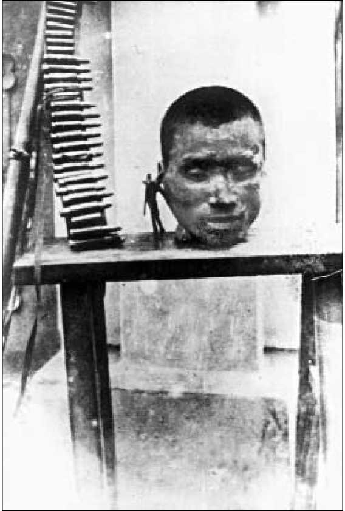
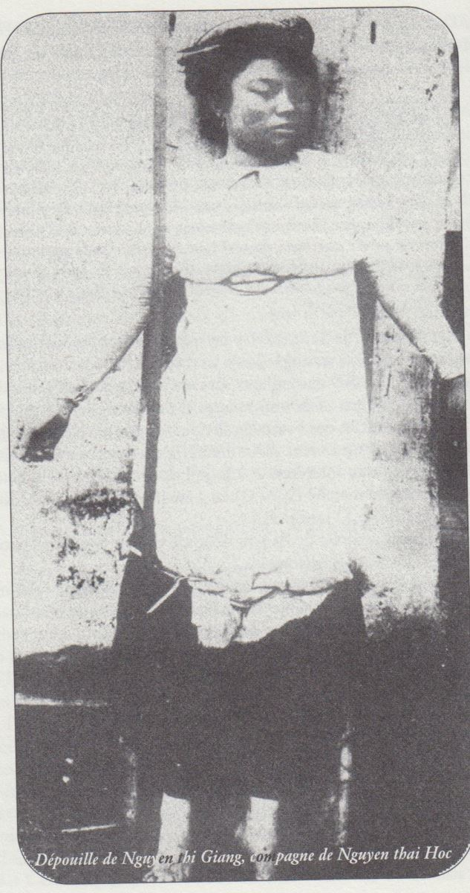
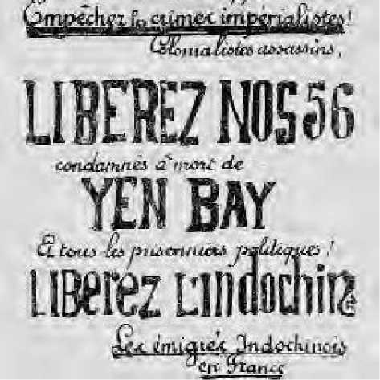

Những tổ chức cộng sản vừa mới hợp nhất thì Việt Nam Quốc Dân Đảng phát khởi một cuộc bạo động nổi dậy toàn bộ Bắc Kỳ, suốt từ Lào Cai giáp Trung Hoa tới vùng châu thổ Sông Hồng.

Đầu người cách mạng phô trương ở Yên Bái
Trong đêm 9 rạng ngày 10 tháng 2, vào 1 giờ sáng, ở Yên Báy, nơi đóng quân của trung đoàn 4 Bắc Kỳ (gồm 1000 lính khố đỏ do 20 sĩ quan và hạ sĩ quan Pháp chỉ huy), hai nhóm đảng viên gồm tất cả 8 người xuất hiện, một nhóm trong thành, một nhóm tại trại lính đại đội 5 và 6. Những người lính tập đồng mưu đã mở đường cho họ. ‘’Một hiệu kèn báo động nổi lên; theo nội quy, một khi có kèn báo động, thì viên đội người Pháp phụ trách kho súng phải phát ngay vũ khí và đạn dược cho lính tập. Việc đó được thực hiện ngay’’. Năm sĩ quan và hạ sĩ quan Pháp bị công kích trong lúc còn đang ngủ, rồi những người phiến loạn chiếm trại lính cho tới rạng sáng, nhưng cuối cùng họ phải rút lui, bỏ lại 20 người chết và khoảng 50 người bị bắt, phần lớn bị thương (69).
Cũng trong đêm đó, Nguyễn Khắc Nhu, nhà trí sĩ nhiều tuổi thường gọi Xứ Nhu, cầm đầu một toán quân vũ trang đơn sơ vội vã, tấn công vào trại lính Lâm Thao và đồn lính khố xanh Hưng Hóa (Phú Thọ). Tại Lâm Thao lính gác đầu hàng quân khởi nghĩa, giao cho họ vũ khí và đạn dược. Huyện lỵ bị phá hủy và phóng hỏa. Nhưng lính khố xanh ở Hưng Hóa cố giữ đồn, quân cách mạng thất bại rút lui theo đường Sông Hồng, để lại nhiều xác chết và hai chục người bị bắt. Xứ Nhu bị thương nặng, tử tại trận.
Ngày 10 tháng hai ở Hà Nội, một đảng viên bắn ngã một tên cảnh sát trên Cầu Doumer (Cầu Long Biên), lập tức bị bắt. Nhiều thanh niên âm mưu khởi nghĩa đang học tại Trường Mỹ Thuật thực hành, ném tạc đạn vào nhà riêng của viên Chánh Sở Mật Thám, vào nhà tù, vào cơ quan cảnh sát trung ương và trại lính sen đầm-Gendarme. Phong trào khởi nghĩa còn rung động các vùng khác trong châu thổ Sông Hồng, như Vĩnh Bảo (thuộc Tỉnh Hải Dương), Phù Dực (Thái Bình), nhưng cũng không tiến đến một kết quả quyết định nào.
Về phía mật thám họ vẫn tiếp tục phát giác nhiều chỗ dấu vũ khí: Bom, kiếm, dao găm, v.v...ở Hà Nội và các Tỉnh Bắc Ninh, Kiến An...Mật thám cũng bắt 24 lính tập ở trại lính Lạng Sơn bị tình nghi đồng lõa âm mưu khởi nghĩa.
Ngày 12.2.30, Toàn Quyền Pierre Pasquier thiết lập một Hội Đồng Đề Hình - tòa án đặc biệt - để truy nã các Tỉnh Yên Báy và Phú Thọ. Nhưng trước khi tiến hành truy nã, thì hắn đã phát động chóng vánh một cuộc đàn áp khủng khiếp bằng quân lực.
Ngày 16 tháng hai, 5 máy bay ném bom xuống làng Cổ Am. Khoảng 50 quả bom trên máy bay thả xuống, liên thanh trên máy bay hạ thấp bắn bừa bãi trên các thửa ruộng có người, không phân biệt thường dân hay người khởi nghĩa. Ngọn lửa trả đũa thiêu trụi các mái nhà tranh, các cây ăn quả, các bụi tre, các đền chùa.
Sáng ngày 17, Khâm Sứ Bắc Kỳ Robin gửi các công sứ một công văn nhưsau:
Làng Cổ Am, thuộc Tỉnh Hải Dương, nơi trú quân của nhóm nổi loạn, đã giết Tri Huyện Vĩnh Bảo, hôm qua đã bị phi đội Hà Nội ném bom. Nay sức cho các ông phải thông báo rộng rãi và nhấn mạnh rằng làng nào ở trong tình trạng tương tự sẽ phải chịu số phận nhưthế một cách tàn nhẫn (70).
Các đội lính cảnh vệ người bản xứ càn đi quét lại vùng hạ lưu châu thổ sông Hồng, bắt bớ bắn giết những kẻ tình nghi. Các xã An Diên và Tiên An bị phóng hỏa. Một tháng rưỡi sau ‘’đội cảnh vệ bản xứ do Thanh Tra Moguez chỉ huy vẫn tiếp tục đàn áp dữ dội tại các Huyện Kiến Thụy, Tiên Lãng, và An Lão. Họ tiêu hủy trắng trợn nhà cửa của người dấy loạn.’’ (71)
Các đội quân này đã càn quét như thế nào?
Xã Trưởng Sơn Dương, thuộc Tỉnh Phú Thọ kể lại những gì diễn ra trong xã của ông như sau:
Chúng tôi, tất cả già trẻ, nam nữ bị lính cầm súng xua cả đến đầulàng trước hai khẩu liên thanh. Khi chúng tôi được trở về nhà chúng tôi chẳng thấy nhà cửa đâu cả, chỉ thấy trước mắt những đống than lửa đỏ với tro tàn. Trong số 69 chủ nhà bị đốt để trừng phạt, thì chỉ có 5 người đã tham gia khởi nghĩa. Chúng tôi không còn gạo để ăn, chúng tôi cũng không còn chăn để đắp mặc dù trời giá lạnh. Ngọn lửa đã thiêu hủy tất cả: Không những chỉ nhà cửa mà cả thóc lúa, quần áo, đồ đạc, cho đến cả bàn thờ tổ tiên của chúng tôi cũng bị đốt ráo. Họ bắt chúng tôi phải mang 200 đồng bạc đến nộp trong thời hạn ngắn, và còn phải vác tre lên phủ để xây dựng lại những kiến trúc đã bị quân cách mạng phá hủy. Làng xóm nghèo của chúng tôi bị thiệt hại nặng nề hơn các làng Xuân Tùng, Cao Mai, Kin Ke, Phùng Nguyên, La Hào, Võng La.
Kèm theo bức thư trên là bản sao giấy biên nhận của viên Công Sứ Pháp:
Đã nhận của làng Sơn Dương, thuộc Phủ Lâm Thao (Phú Thọ) số tiền 200 đồng (200$) để góp vào việc chi phí sửa chữa do hành động của quân dấy loạn gây ra, trong đó có một số người ở làng này tham dự.
Phú Thọ, ngày 28.2.1930 Quan Công Sứ Calasse (71).
Người ta nhớ lại câu nói của Paul Bert, Khâm Sứ Bắc Kỳ và Trung Kỳ trong thời hạn quá ngắn ngủi, vì ông đã chết ở Hà Nội năm 1886, ngay trong năm ông mới sang, ít lâu sau khi Huế thất thủ:
Khi một dân tộc, vì một lý do nào đó, đặt chân lên lãnh thổ của một dân tộc khác, thì chỉ có ba cách đối xử, đó là: Tiêu diệt dân tộc bại trận, nô dịch họ một cách nhục nhã hoặc gắn bó họ cùng số phận của dân tộc mình (72).
Chính quyền thực dân chưa bao giờ chọn cách thứ ba.
Rồi đến công việc xét xử.
Ngày 28 tháng 2, Hội Đồng Đề Hình Yên Báy kết án tử hình 13 trong số 15 người bị buộc tội.
Ngày 23 tháng 3, lại xử tử 39 người trong số 86 người bị buộc tội. Những người còn lại kẻ bị kết án khổ sai, kẻ bị lưu đày vĩnh viễn hoặc có thời hạn. Trong đó có 44 lính khố đỏ, nhiều nông dân, tiểu thương, thợ thủ công, giáo viên, thầy thuốc.
Trước Hội Đồng Đề Hình, Nguyễn Thái Học không trả lời:
- Tôi đứng trước cường lực chứ không phải trước công lý (Je comparais devant la force, non devant la justice).
Thái Học và Phó Đức Chính, linh hồn cuộc khởi nghĩa,trong số bị kết án tử hình. Họ khước từ ký tên xin ân xá, vả lại những đơn này nói chung đều bị Hội Đồng Bảo Hộ do Robin chủ trì bác bỏ.
Vào tháng 4, thêm vào số 52 án tử hình ở Yên Báy, Tòa Án Bắc Ninh do Công Sứ Pháp cai trị tỉnh này chủ trì, kết án tử hình (vắng mặt) 4 người nữa và công bố án khổ sai 15 người bị buộc tội.
Ngày 28 tháng 5, 87 người bị đưa ra Hội Đồng Đề Hình Phú Thọ: 10 người bị tử hình, 74 người khổ sai hoặc lưu đày, 2 người vào trại trừng giới.
Từ tháng ba, 2 người bị chặt đầu, họ bị tòa án quan lại An Nam ở Vinh xử tử. Tháng năm, 4 người bị chém ở Yên Báy; qua tháng sáu, cũng ở Yên Báy 13 người bị rơi đầu. Vào tháng mười một 5 người chết chém ở Phú Thọ. Thế thì 24 người bị chặt đầu trong số 66 người bị kết án tử. Từ tháng 2 đến tháng 4 năm 1930, hơn 2000 người bị hạ ngục.
Trong lúc đó ở Pháp phong trào phản đối bồng bột nổi lên. Vào tháng ba, tại mít ting ở Câu Lạc Bộ Faubourg, Tạ Thu Thâu lên tiếng phản đối cuộc đàn áp Yên Báy trước 600 người tham dự. Ở các tỉnh có trường đại học, các bến cảng, trong các cuộc diễn hành mùng 1 tháng 5, cuộc đàn áp đã hiệp nhứt những người An Nam xuất dương thuộc mọi xu hướng chính trị, thị uy chung cùng một thái độ công phẫn. Hội Nhân Quyền cũng tỏ ra lo ngại.
Ngày 22 tháng 3, Tổng Thống Gaston Doumergue và vua Bảo Đại khánh thành ‘’Ngôi Nhà Sinh Viên Đông Dương’’ tại Khu Đại Học. Trước hôm ấy cảnh sát bắt giam những tay hay gây rối như Nguyễn Văn Tạo người phái Lao Nông, Tạ Thu Thâu và Nguyễn La Chân, nguyên là thủ quỹ của Đảng Việt Nam Độc lập, họ thuộc Nhóm những người xuất dương Đông Dương(Groupe des Émigrés Indochinois). Mặc dầu bắt bớ vẫn có người đi biểu tình. Thế rồi Phan Văn Chánh, Lê Bá Cang, Ngô Quang Huy và một người nữa bị bắt giữ vì đã tung rải truyền đơn: ‘’Hãy thả 13 tù tử hình ở Yên Báy! hãy thả tất cả tù chính trị’’.
Sinh viên tẩy chay phòng trọ tại Nhà Sinh Viên Đông Dương, làm nhiều căn phòng rỗng vắng trong một thời gian mặc dù khu vực này là nơi ai ai cũng mơ mộng được trọ ở đó. Tiền kiến trúc nhà trọ, món quà tẩm thuốc độc này ở đâu ra? Phảng phất hình ảnh mơ hồ của một ông Fontaine, Giám Đốc nhà máy rượu ở Đông Dương, ‘’Nhà Mạnh Thường Quân thuộc địa’’, làm cho tầng lớp trẻ tuổi đó phải dằn vặt dặt dè. Hơn nữa lại thêm cuộc khủng bố rùng rợn vừa ập xuống Bắc Kỳ. Ngày khai mạc trong số 80 phòng chỉ có 7 phòng có sinh viên ở. Trong số 35 người ghi tên xin trọ, 29 ngườiđã rút tên vì - theo những từ ngữ lưu hành trong giới sinh viên - là phải coi chừng ‘’tình thân ái giả hiệu’’, phải chủ ý ‘’lòng nhân ái của bọn thực dân’’, đừng để dáng lộng lẫy của ngôi Nhà Đông Dương mê hoặc mình.
Đảng cộng sản Pháp, qua những truyền đơn gửi tới ‘’giới cần lao và sinh viên Đông Dương’’, khuyến khích họ cùng biểu thị với giai cấp vô sản chính quốc nhằm cứu tử 13 chiến sĩ, và động viên họ nhập vào đảng cộng sản và trong tổ chức Tổng Liên Đoàn Lao Động Thống Nhất nhằm ‘’đuổi tất cả bọn bóc lột ra khỏi Đông Dương’’.
Tại Toulouse, trong cuộc diễu hành ngày mùng 1 tháng Năm năm 1930 do đảng cộng sản Pháp và Tổng Liên Đoàn Lao Động Thống nhất tổ chức, sinh viên An Nam đòi thả những người bị án tử hình ở Yên Báy. Cảnh sát bắt sáu người, đặc biệt trong đó có Trần Công Vị, sinh viên Y Dược, người đã từng tuyên thệ khước từ làm công chức của thực dân, cùng với Trần văn Giàu và Nguyễn văn Dựt, hai người sau đó sang học ở Moscou. Cũng tại Toulouse ta gặp lại Phan Văn Hùm, trong Ủy ban đấu tranh của những người xuất dương Đông Dương, phân phát truyền đơn ‘’Người An Nam ở Toulouse chống đàn áp’’, ký tên Tạ Thu Thâu. Đồng thời anh phát những khẩu hiệu bướm kêu gọi phản đối cuộc xử án ở Bắc Ninh làm tăng số án tử hình lên tới 56:
Hỡi vô sản và những người bị áp bức, hãy ngăn tay sát nhân của chủ nghĩa đế quốc! Hỡi bọn sát nhân thuộc địa, hãy thả 56 người bị án tử hình ở Yên Báy và tất cả các tù chính trị! Giải phóng Đông Dương!
Nhóm người xuất dương Đông Dương ở Pháp
Ngày 17 tháng 5, nhóm người xuất dương Đông Dương phân phát Bản Tuyên Bố với chính phủ Pháp, với giai cấp vô sản Pháp và vô sản quốc tế, trong đó nhắc lại cuộc hành hình ở Vinh, nơi mà tên đao phủ phải chặt đi chặt lại tới ba lần, và cuộc trảm quyết ngày mùng 8 tháng 5 ở Yên Báy, nêu lên trường hợp 39 người bị xử tử đang chờ đến lượt mình, những người mà hồ sơ vừa mới gửi tới Pháp để xem xét. Tờ Tuyên Bố nhấn mạnh tính chất vô hiệu của chính sách đàn áp:
Ngày nay tư tưởng cách mạng đã hướng dẫn ý thức tập thể của quần chúng bị bóc lột. Một sự đè nén bằng sức mạnh thô bạo chỉ làm tăng thêm bước tiến lan tràn và không thể chế ngự nổi của họ. Dưới sự bóc lột dữ dội của chủ nghĩa tư bản đang suy tàn, thế giới đang phân chia thành hai lực lượng cơ bản đấu tranh quyết liệt với nhau. Từ trong cuộc đối đầu vĩ đại giữa một thiểu số chiếm hữu của cải và đại đa số người làm ra của cải, sẽ dẫn tới một kết quả chắc chắn, đó là sự thắng lợi hoàn toàn của đông đảo quần chúng bị bóc lột đã tự giác ngộ.
Cầm ngục, lưu đày, tù khổ sai chung thân, tử hình, liên thanh và máy bay, không gì có thể khuất phục được chúng ta.
Kết thúc, Bản Tuyên Bố có lời mời những người lao động tới tham dự cuộc họp để phản đối tập thể những vụ chém đầu ở Yên Báy do Liên Minh Cộng Sản (phái Tả Đối Lập) (73) và nhóm người xuất dương Đông Dương tổ chức ngày thứ tư 28 tháng 5, có các đại biểu thuộc các nhóm thuộc địa khác tham gia, cuộc họp tổ chức tại nhà Cà phê La Bellevilloise, số 23 phố Boyer, Paris 20e.
Một bản kêu gọi thứ hai, tựa đề Những cuộc thảm sát ở Đông Dương, nhắc nhở mọi người cần kiếp phản đối khẩn cấp: ‘’Hỡi nhân dân Paris! Hỡi công nhân Pháp! Các bạn hãy ngăn chận đừng để giết hại những người đã phải vùng dậy vì bị một chế độ đói nghèo triền miền, một tình trạng khôn cùng có tổ chức, một chế độ đẩy đến chỗ chết chóc, nó dồn đến đến bước đường cùng.’’
Ngày 27 tháng 6, đảng cộng sản Pháp và tổ chức Cứu Tế Đỏ Quốc Tế tập hợp hơn 4.000 người tại Rạp Xiếc Mùa Đông để phản đối những án quyết đẫm máu của Hội Đồng Đề Hình Bắc Kỳ và các tòa án quan lại ở An Nam.
Cuộc biểu tình trước Điện l'Élysée ngày 22 tháng 5 năm 1930
Ngày 21 tháng 5, tại Paris, một ủy ban tranh đấu gồm 17 người nhóm Lao Nông và Những người xuất dương Đông Dương, dự định ngày mai tựu hợp nhau hết sức đông đảo trước Điện Élysée. Liên minh cộng sản kêu gọi các đảng viên của mình tham gia. Báo Sự Thật (La Vérité) của họ, ngày 30 tháng 5 đăng tin như sau:
Ngày thứ năm 22 tháng 5, hồi 3 giờ chiều, một cuộc biểu tình quảng đại tập hợp hàng trăm thợ thuyền và sinh viên Đông Dương trước Điện Élysée. Trong vòng nửa tiếng đồng hồ, các đồng chí chúng ta giương cao biểu ngữ có ghi: ‘’Hãy thả 39 người bị án tử hình của chúng tôi!’’. Họ tung ra hàng trăm truyền đơn qua các phố, họ hăng hái hô to phản đối dưới các cửa sổ Chủ Tịch Cộng Hòa. Giao thông bị tắc nghẽn, giữa các hàng xe hơi dừng lại, cảnh sát sửng sốt trước cuộc biểu tình rầm rộ và bất ngờ, đành chờ quân tiếp viện để can thiệp. Những người lao động tại các công trường gần đấy biểu lộ cảm tình với đoàn biểu tình. Khi nhóm cảnh sát tiếp viện gấp rút gọi đến nơi, số cảnh sát tăng lên gấp mười, chúng liền xô nhập đoàn biểu tình một cách hung bạo. Mười hai người biểu tình bị bắt đưa về bót. Ở đó bọn cảnh sát giận dữ thả sức đánh đập.
Đó là Nguyễn Văn Tạo, Đào Thành Phát, Trần Văn Chiêu, Đặng Bá Lênh, Huỳnh Văn Phương, Trần văn Đởm, Albert Susiny, Tạ Thu Thâu, Trần Văn Ty, Trần văn Giàu, Lê Văn Thử và Francis Gérard (Rosenthal). Một đồng chí trong số đó bị thương ở đầu máu chảy đầm đìa.
Ngày 25 tháng 5, một mẻ bắt bớ lần thứ hai. Trong cuộc biểu tình truyền thống tại ‘’Bức Tường Công Xã’’ (Mur des Fédérés ở nghĩa địa Père-Lachaise), cảnh sát đi bắt từng người một, hễ ai khuôn mặt lộ ra gốc gác ở Đông Dương thì tóm, và tiếp theo đó, chúng khám xét nơi trú ngụ nhiều người.
Trong số bốn chục người bị bắt, người thì bị giam tại nhà lao Santé, người thì bị nhốt ở khám La Roquette. Mười chín người bị chuyển xuống Marseille rồi bị trục xuất. Họ lên tàu về Đông Dương ngày 30 tháng 5. Trong đoàn đó có Tạ Thu Thâu và các bạn như Phan Văn Chánh, Huỳnh Văn Phương. Nguyễn Văn Tạo, đảng viên đảng cộng sản Pháp, vẫn bị giữ tại nhà lao Santé.
Ngày 28, những người An Nam tổ chức bị trục xuất vắng mặt, các đồng chí người Pháp trong Liên minh cộng sản bắt tay sấp đặt cuộc mít tinh ở Càphê La Bellevilloise.
Nhưng cũng chẳng đi đến đâu. Tại nghị viện, khai cuộc tranh luận ngày 6 tháng sáu. Daladier đề nghị lập một ủy ban quốc hội soạn thảo một qui chế hướng dịu tình hình Đông Dương. Không có kết quả. Cuộc cải cách những chế định chính trị sẽ không bao giờ được vạch ra.
Mặc dù có những cuộc phản đối, bọn thống trị không màng đến. Mười ba cái đầu thanh niên rơi tại Yên Báy rạng sáng ngày 17 tháng 6 năm 1930. LouisRoubaud, người chứng kiến cuộc hành huyết, đã kể lại vụ sát nhân theo luật pháp này trong cuốn sách của ông: Việt Nam, tấn bi kịch Đông Dương (ông nghe mười ba tiếng Việt Nam! hô lên trước đoạn đầu đài) có ghi lại tiếng kêu xé ruột của bà mẹ khi thấy con mình bị dẫn đi chém ‘’Ơi chao ôi, con ơi!’’.
Nguyễn Thái Học, người sáng lập Việt Nam Quốc Dân Đảng, trước ngày bị hành hình, nhận trách nhiệm cuộc khởi nghĩa trong bức thư gửi cho các dân biểu Pháp, nhưng bức thư này không hề đến tay họ. Đây là mấy giòng căn bản:
Tôi đã tổ chức Đảng Quốc Dân Việt Nam vào năm 1927 để hoạt động chủ đích đánh đuổi người Pháp ra khỏi lãnh thổ và thành lập một chính phủ Cộng Hòa Việt Nam thực sự dân chủ.
Tôi tự mình chịu trách nhiệm tất cả các biến cố chính trị đã xảy ra trong đất nước tôi từ ngày tháng đó và do tôi tổ chức. Tôi là thủ phạm thực sự và duy nhất, cái chết của tôi là đủ cho các ông rồi. Tôi xin các người khác được tha. Sau lời lẽ nói trên, tôi xin tuyên bố với người Pháp rằng nếu như từ đây về sau họ muốn chiếm Đông Dương một cách yên ổn, không bị bất kỳ một phong trào cách mạng nào quấy nhiễu, thì họ phải từ bỏ mọi phương pháp tàn bạo và vô nhân đạo, đối xử người Việt Nam như những người bạn, chứ không phải như những ông chủ độc ác; phải cố sức làm giảm bớt tình trạng khốn cùng về tinh thần và vật chất bằng cách khôi phục lại cho người Việt Nam những quyền lợi cá nhân cơ bản: Tự do du hành, tự do học tập, tự do hội họp, tự do báo chí; không được dung túng sự những lạm công chức và những tệ lậu của họ; hãy cho người dân được học hành; hãy mở mang công thương nghiệp bản địa.
Kẻ thù của các ông, nhà cách mạng
Nguyễn Thái Học
Sau khi Nguyễn Thái Học bị hành quyết, người bạn đời của ông là Cô Giang (Nguyễn Thị Giang) tự treo cổ.

Bọn cung cấp người cho máy chém và nhà lao vẫn tiếp tục công việc của họ: Tại Hà Nội, ngày 5 tháng 8 năm 1930, Đoàn Trần Nghiệp (Ký Con) Nguyễn Văn Nho (em của Nguyễn Thái Học) và mười người nữa bị kết án tử hình; 125 người bị cáo bị kết án khổ sai hay lưu đày. Ký Con, Nho, Lương Ngọc Tôn và Nguyễn Quang Triêu sẽ bị chém đầu ngày 9 tháng 3 năm 1931 trước cửa nhà pha Hỏa Lò Hà Nội.
Ngày 17 tháng 11, 179 người bị buộc tội thuộc Việt Nam Quốc Dân Đảng bị đưa ra Hội Đồng Đề Hình Hải Dương: 6 người bị xử chém, 119 người bị khổ sai hoặc lưu đày và 6 (vị thành niên) bị đưa tới trại cải hối.
Ngày 21 tháng giêng năm 1931, Hội Đồng Đề Hình Kiến An đến lượt mình cũng kết án ‘’âm mưu làm rối trị an Nhà nước, mưu toan giết người và chế tạo chất nổ’’: 4 người bị khổ sai chung thân, 23 người tù giam từ 2 đến 10 năm, và 140 người bị lưu đày.
Ở Hải Dương, lính kín đào lên 76 quả bom chôn sâu dưới đất 2 thước, trong những ngày đầu tháng 3 năm 1931, ngay trước vụ hành quyết bốn người bị kết án hồi tháng 8 năm 1930.
Việt Nam Quốc Dân Đảng, một đảng cuối cùng theo truyền thống âm mưu quân sự của Phan Bội Châu, sẽ khuất dạng mươi năm...Dư đảng chạy sang Tàu. Vũ Hồng Khanh (tên thiệt Vũ Văn Giản) cùng Nguyễn Thế Nghiệp ẩn trú Vân Nam, Trần Trung Lập nương náo Quảng Tây, Nghiêm Kế Tổ ở Quảng Đông, họ sẽ hồi phục Việt Nam Quốc Dân Đảng vào những năm 1940.
Cùng trong giai đoạn Việt Nam Quốc Dân Đảng tung hoành, đảng cộng sản Đông Dương thành lập. Một khi đảng quốc gia thất thủ, trào lưu dấy loạn tồn tại sáp nhập vào làn sóng vận động nông dân dưới cờ cộng sản.
Truyền đơn bươm bướm đòi thả những người bị xử tử ở Yên Báy

CHÚ THÍCH
69.- Archives Nationales, Paris. F7 13167 và L. Roubaud, Viet-Nam, la tragédie indochinoisse, Paris 1931, trang 17.
70.- L. Roubaud, Viet-Nam, la tragédie indochinoisse, Paris 1931, trang 143-144.
71.- Andrée Viollis, Indochine S.O.S, Paris 1935, trang 204.
72.- L. Roubaud, Viet-Nam, la tragédie indochinoisse, Paris 1931, trang 12.
73.- Vào năm 1929, một nhóm đồng chí đối lập với đảng cộng sản Pháp cùng Quốc Tế Đệ Tam, tập hợp quanh Alfred Rosmer, Raymond Molinier, Pierre Naville, Gérard Rosenthal, Pierre Frank...Ngày 15.8, họ cho ra mắt tờ tuần báo La Vérité (Sự Thật) và tuyên bố trong số 1: Mọi xu hướng tư tưởng khác nhau trong phái tả cộng sản đều có thể trình bày trong cột báo. Vào tháng 4 năm 1930, Liên minh có từ 200 đến 300 chiến hữu. (Theo Jean-Jacques Marie, Le Trotskysme, Paris 1977).